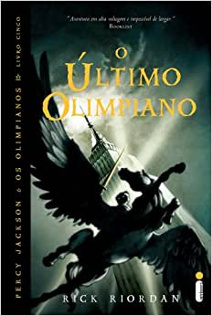
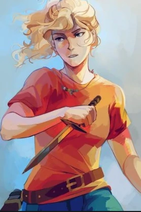
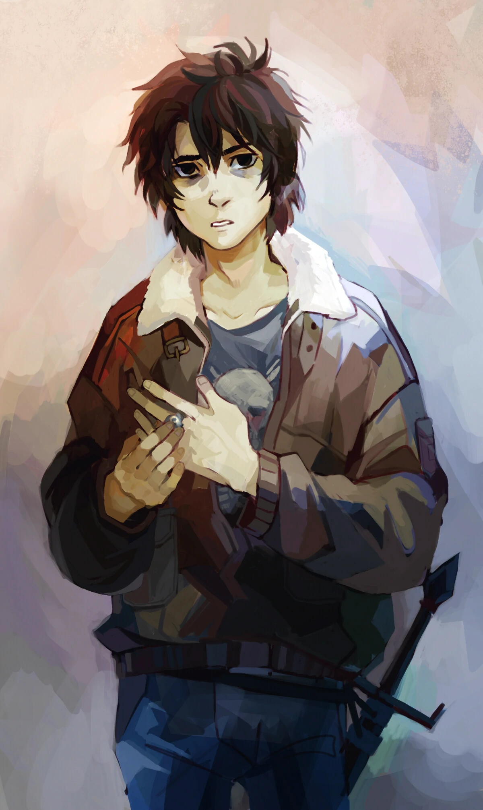

Título: Percy Jackson e O Último Olimpiano.
Ano de Publicação: 05/05/2009.
Editora: Intrínseca.
Número de Páginas: 384.
Sinopse: Os meios-sangues passaram o ano inteiro preparando-se para a batalha contra os Titãs, e sabem que as chances de vitória são pequenas. O exército de Cronos está mais poderoso que nunca, e cada novo deus ou semideus que se une à causa confere mais força ao vingativo titã. Enquanto os Olimpianos se ocupam de conter a fúria do monstro Tifão, Cronos avança em direção à cidade de Nova York, onde o Monte Olimpo está precariamente vigiado. Agora, apenas Percy Jackson e seu exército de heróis podem deter o Senhor do Tempo.Nesse quinto e último livro da série, o combate se acirra e o mundo que conhecemos está prestes a ser destruído. O destino da civilização está nas mãos do semideus anunciado na antiga profecia, e Percy está perto de completar dezesseis anos – a dúvida é: o herói será ou não capaz de tomar a decisão correta?
Ano de Publicação: 05/05/2009.
Editora: Intrínseca.
Número de Páginas: 384.
Sinopse: Os meios-sangues passaram o ano inteiro preparando-se para a batalha contra os Titãs, e sabem que as chances de vitória são pequenas. O exército de Cronos está mais poderoso que nunca, e cada novo deus ou semideus que se une à causa confere mais força ao vingativo titã. Enquanto os Olimpianos se ocupam de conter a fúria do monstro Tifão, Cronos avança em direção à cidade de Nova York, onde o Monte Olimpo está precariamente vigiado. Agora, apenas Percy Jackson e seu exército de heróis podem deter o Senhor do Tempo.Nesse quinto e último livro da série, o combate se acirra e o mundo que conhecemos está prestes a ser destruído. O destino da civilização está nas mãos do semideus anunciado na antiga profecia, e Percy está perto de completar dezesseis anos – a dúvida é: o herói será ou não capaz de tomar a decisão correta?
Personagens Principais

Percy Jackson

Annabeth Chase

Groover Underwood

Nico di Angelo